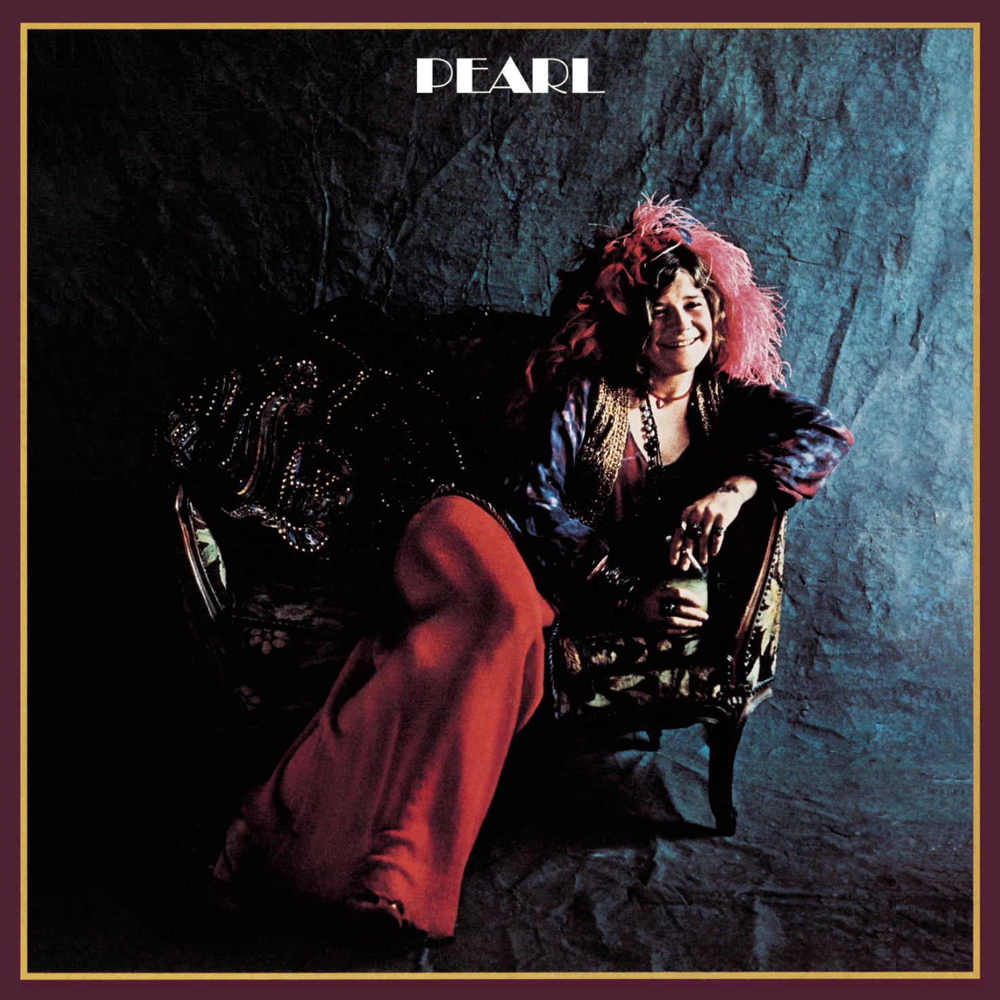

Day 16

Janis Joplin - Cry Baby - Pearl - 1971
原作Bert Berns。这首歌是Janis Joplin的翻唱，被收录在《Pearl》中。说到Bert Berns，推荐一部介绍他的纪录片：《Bang: The Bert Berns Story》。
听完Janis的歌会有疲惫感，好像你也像她一样用灵魂燃烧了五分钟。
Cry baby, cry baby, cry baby Honey, welcome back home I know she told you Honey, I know she told you that she loved you Much more than I did But all I know is that she left you And you swear that you just don't know why But you know, honey I'll always I'll always be around If you ever want me Come on and cry, cry baby Cry baby, cry baby Oh honey, welcome back home Don't you know Honey, ain't nobody ever gonna love you The way I try to do? Who'll take all your pain Honey, your heartache, too? And if you need me, you know That I'll always be around If you ever want me Come on and cry, cry baby Cry baby, cry baby Oh daddy, like you always saying to do And when you're walkin' around the world, babe You said you'd try to look for the end of the road You might find out later that the road'll end in Detroit Honey, the road'll even end in Kathmandu You can go all around the world Trying to find something to do with your life, baby When you only gotta do one thing well You only gotta do one thing well to make it in this world, babe You got a woman waiting for you there All you ever gotta do is be a good man one time to one woman And that'll be the end of the road, babe I know you got more tears to share, babe So come on, come on, come on, come on, come on And cry, cry baby Cry baby, cry And if you ever feel a little lonely, dear I want you to come on, come on to your mama now And if you ever want a little love of a woman Come on and baby, baby, baby, babe, babe, baby now Cry baby yeah